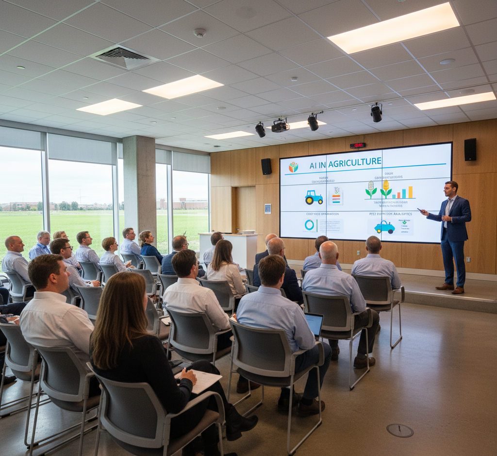
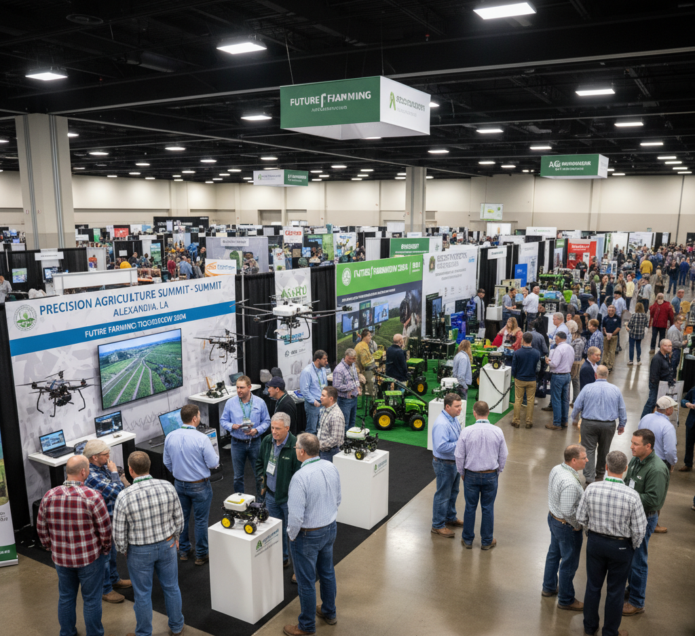
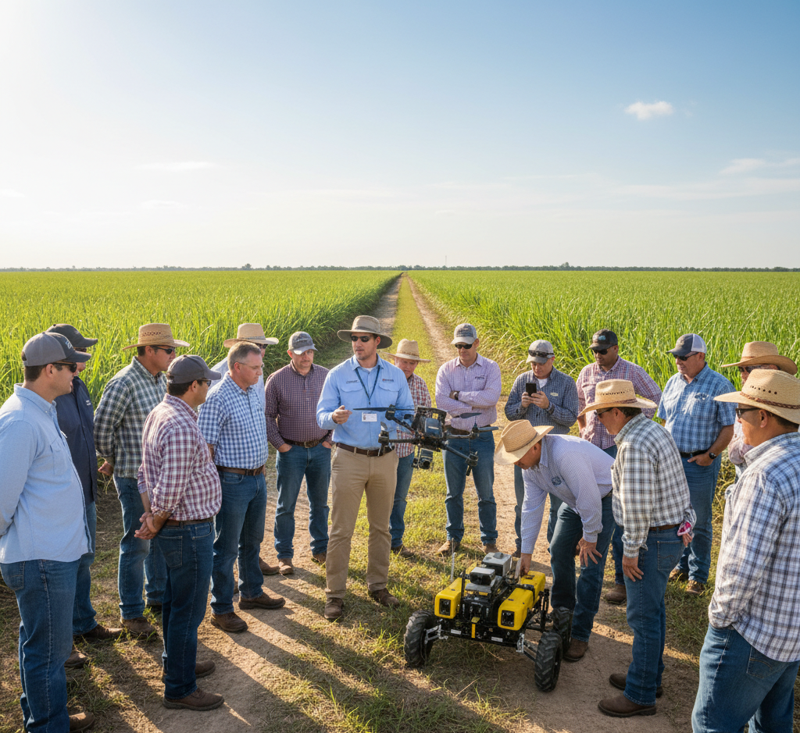
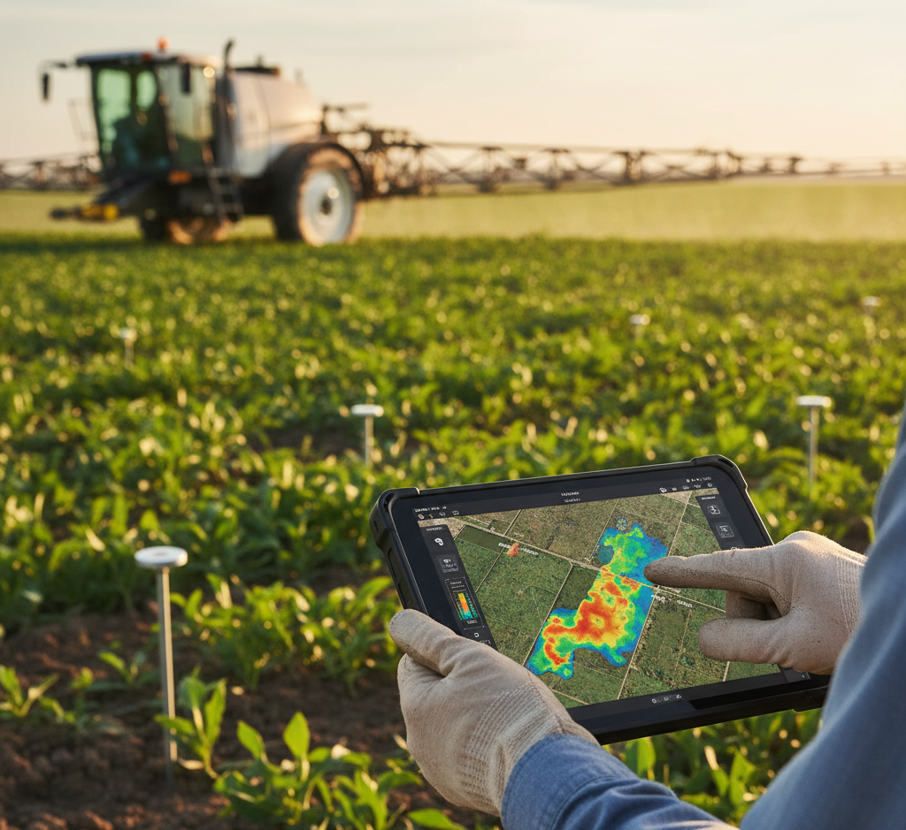
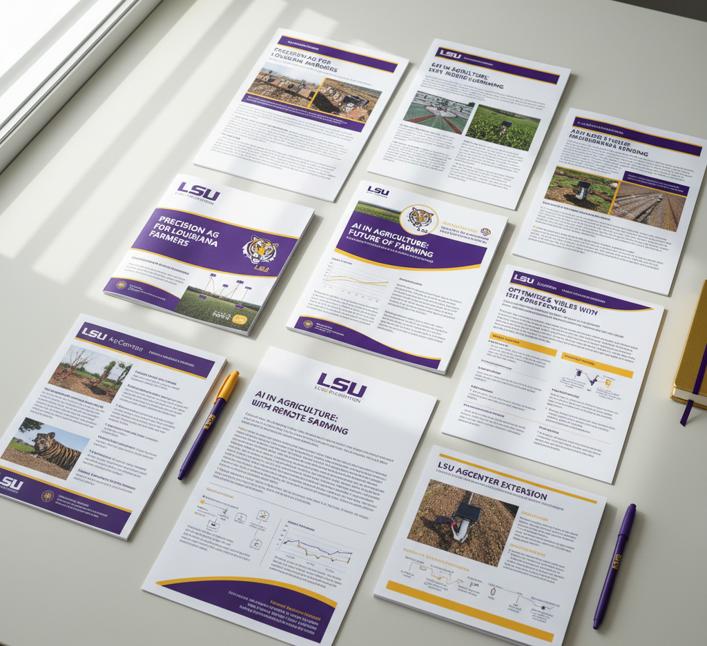

I initiated and hosted a monthly seminar series at the LSU AgCenter for extension agents, farmers, and industry representatives, focusing on applications of artificial intelligence in precision and digital agriculture. I am responsible for conceiving and launching the initiative, identifying and inviting expert speakers, coordinating presentation content and timing, reserving the conference room, promoting the series across relevant channels, and leading and facilitating each seminar session.

The Precision Agriculture Summit is a one-day event hosted by the LSU AgCenter at the State Evacuation Shelter in Alexandria, Louisiana. The Summit highlights practical applications of cutting-edge technologies—including artificial intelligence, drones, variable-rate systems, sensors, and digital tools—in modern crop production. Through expert presentations and exhibitor showcases, the event fosters collaboration among farmers, crop consultants, industry professionals, researchers, and extension personnel, all working together to advance precision and digital agriculture in Louisiana.

We provided training for extension agents, focusing on the fundamental concepts of precision agriculture technologies and their applications. Moving forward, we plan to summarize relevant content from the Artificial Intelligence in Agriculture Seminar Series and the Louisiana Precision Agriculture Summit and incorporate that information into future training materials.
Delivered presentations and live demonstrations of precision agriculture technologies—including drones, autonomous robots, AI applications—at field days and other extension events to promote technology adoption among stakeholders.

We work with extension agents and farmers to evaluate a range of precision agriculture equipment and artificial intelligence applications.

-->Developed extension publications, presentations, and informational flyers to educate stakeholders at extension and outreach events.
